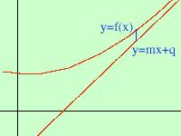

|
voglio dimostrare che per l'asintoto vale m = limx-> e q = limx-> Iniziamo dal primo limite:  poiche' si tratta di trovare il coefficiente angolare possiamo prendere una qualunque
tra le infinite rette parallele con lo stesso coefficiente angolare e quindi mi pongo nella condizione piu' favorevole considerando una retta
passante per l'origine y = mx
poiche' si tratta di trovare il coefficiente angolare possiamo prendere una qualunque
tra le infinite rette parallele con lo stesso coefficiente angolare e quindi mi pongo nella condizione piu' favorevole considerando una retta
passante per l'origine y = mxL' asintoto e' la retta che avvicina la funzione quindi se prendo sulla verticale la differenza fra la funzione e la retta questa deve diventare sempre piu' piccola cioe' limx-> limx-> estraggo la m dal limite (posso farlo perche' non dipende da x) limx-> ricavo la m limx-> m = -------------------- limx-> e quindi ottengo m = limx->  Per il secondo limite faccio lo stesso ragionamento ma con una retta qualunque y = mx + q L' asintoto e' la retta che avvicina la funzione quindi se prendo sulla verticale la differenza fra la funzione e la retta questa deve diventare sempre piu' piccola cioe' limx-> limx-> Poiche' q non dipende da x posso estrarlo dal limite e portarlo al secondo termine limx-> limx-> e leggendo a rovescio q = limx-> |